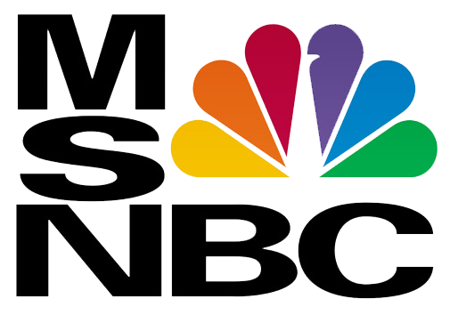

|  Microsoft National Broadcasting Company (MSNBC):
One of the few channels back in 1996 to provide 24 hour news, but this was nothing new. What made it new was using the Internet and Telephones to get news quicker then any other News Channel. People would call in and report news, upon which they would cover it, in many instances they beat CNN with 5+ Minutes! |